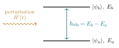
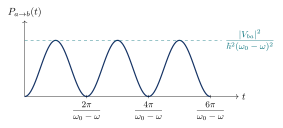

Download this chapter (PDF) Full notes (PDF)
31 Time-Dependent Perturbation Theory: The Two-Level System¶
31.1 Why a New Theory Is Needed¶
If the Hamiltonian is time-independent, an energy eigenstate evolves only by a phase:
All probabilities stay the same: eigenstates are stationary states and the state remains the same throughout time. To make a system change state (absorb or emit a photon, for example) the Hamiltonian must depend on time. We write
Intuition
A perturbation that oscillates at the right frequency can “pump” the system from one stationary state to another, like pushing a swing at its natural frequency. Time-independent perturbation theory finds shifted levels; time-dependent perturbation theory finds transition probabilities between levels.
31.2 Setting Up the Two-Level System¶
Let \(\hat H^0\) have two eigenstates \(|\psi_a\rangle,|\psi_b\rangle\) with \(\hat H^0|\psi_a\rangle = E_a|\psi_a\rangle\) and \(\hat H^0|\psi_b\rangle = E_b|\psi_b\rangle\).

At \(t=0\) any state is a superposition \(|\psi(0)\rangle = c_a|\psi_a\rangle + c_b|\psi_b\rangle\). Without the perturbation it would evolve as
Here \(|c_a|^2\) is the probability to find the particle in state \(a\), similarly \(|c_b|^2\) for state \(b\), and \(|c_a|^2+|c_b|^2=1\).
Now include \(\hat H'(t)\). The coefficients become time-dependent:
Insert into \((\hat H^0+\hat H'(t))|\psi(t)\rangle = i\hbar\,\partial_t|\psi(t)\rangle\). The \(E_a\) and \(E_b\) terms from \(\hat H^0\) cancel against the same terms from the time derivative of the phase factors, leaving
Take the inner product with \(\langle\psi_a|\) (using \(\langle\psi_a|\psi_b\rangle=0\)), and define \(H'_{ij}=\langle\psi_i|\hat H'|\psi_j\rangle\):
Taking the inner product with \(\langle\psi_b|\) instead gives
Diagonal elements are taken as zero, \(H'_{aa}=H'_{bb}=0\) (they only shift the energies and are absorbed into the levels).
Coupled Equations for the Two-Level System
Study Note
These equations are exact; no approximation has been made yet. The approximation enters only when they are solved iteratively below. Hermiticity gives \(H'_{ba}=(H'_{ab})^*\), and the exponentials \(e^{\pm i\omega_0t}\) are the beating between the two levels: the coupling is effective only if \(\hat H'(t)\) itself has a component oscillating near \(\omega_0\).
31.3 Perturbative Solution Order by Order¶
Solve the coupled equations by iteration. Let \(c^{(n)}\) denote the \(n\)-th iterate, i.e. the amplitude correct to order \(\hat H'^{\,n}\). The initial condition fixes the zeroth iterate:
Each iterate is obtained by inserting the previous iterate of the other level into the right-hand side:
First order. \(\dot c_a^{(1)} = -\frac i\hbar H'_{ab}e^{-i\omega_0t}c_b^{(0)}=0\), so \(c_a^{(1)}\) is constant, and the initial condition \(c_a(0)=1\) gives \(c_a^{(1)}(t)=1\): there is no first-order correction to \(c_a\). Then
Second order. Now \(c_b^{(1)}\neq0\) feeds back into \(c_a\):
Integrating, with the constant of integration fixed by \(c_a(0)=1\),
For \(c_b\), the driving term is \(c_a^{(1)}=1\), exactly as in the first iterate, so \(\dot c_b^{(2)}=\dot c_b^{(1)}\) and \(c_b^{(2)}(t)=c_b^{(1)}(t)\): the first correction to \(c_b\) beyond \(\hat H'\) appears only at third order.
Two-Level Amplitudes to Second Order
Verification (probability conservation)
To order \(\hat H'^2\),
Adding the real parts of the double integral over the triangle \(t''<t'\) and its mirror image gives the integral over the full square, which equals \(\frac1{\hbar^2}\big|\int_0^tdt'\,H'_{ba}e^{i\omega_0t'}\big|^2=|c_b^{(1)}|^2\). Hence \(|c_a|^2+|c_b|^2=1\) to second order.
Study Note (notation)
The superscript counts iterations (amplitude correct to that order), so \(c_a^{(1)}=1\); the notebook also writes “\(c_a^{(1)}=0\)” at one point, meaning that the first-order correction to \(c_a\) vanishes. Both statements are the same fact.
Memory Rule
Each factor of \(\hat H'\) moves the system once between the levels; an even number of kicks brings it back to \(a\), an odd number to \(b\). That is why, starting from \(a\), the corrections to \(c_a\) come only at even orders and those to \(c_b\) only at odd orders.
31.4 Example: Sinusoidal Perturbation¶
Example: Sinusoidal Perturbation \(\hat H'(\vec r,t)=V(\vec r)\cos\omega t\) || Griffiths, Section 11.1.3
Here \(H'_{ab}=V_{ab}\cos\omega t\) and \(H'_{ba}=V_{ba}\cos\omega t\). The first-order amplitude is
Complete Solution of the integral
write \(\cos\omega t'=\tfrac12(e^{i\omega t'}+e^{-i\omega t'})\), so \(\int_0^t e^{i\omega_0t'}\cos\omega t'\,dt' = \tfrac12\Big[\frac{e^{i(\omega_0+\omega)t}-1}{i(\omega_0+\omega)}+\frac{e^{i(\omega_0-\omega)t}-1}{i(\omega_0-\omega)}\Big]\), and the factor \(-\frac i\hbar\cdot\frac1{2i}=-\frac1{2\hbar}\) gives the result above.
Let \(\omega\) be the driving frequency and \(\omega_0\) the transition frequency. If \(\omega\approx\omega_0\), then \(\omega+\omega_0\gg|\omega-\omega_0|\) and the first term (denominator \(\omega_0+\omega\)) is negligible compared with the second, which is large:
Hence the probability of a transition \(a\to b\) is
Transition Probability for a Sinusoidal Perturbation

Study Note (sketch)
\(P_{a\to b}(t)\) oscillates between \(0\) and the fixed maximum \(|V_{ba}|^2/\hbar^2(\omega_0-\omega)^2\) with zeros at \(t=2\pi n/(\omega_0-\omega)\). The notebook sketch draws the successive arcs with decreasing height; for fixed \(\omega\) the arcs all have the same height, as in the figure above.
Study Note (rotating-wave approximation)
Dropping the term with denominator \(\omega_0+\omega\) (the “counter-rotating” term) is the rotating-wave approximation. It is excellent near resonance and fails for \(\omega\) far from \(\omega_0\).
Study Note (validity at resonance)
For \(\omega\to\omega_0\), \(\sin^2(\Delta t/2)/\Delta^2\to t^2/4\) (with \(\Delta=\omega_0-\omega\)), so \(P_{a\to b}\to(|V_{ba}|t/2\hbar)^2\) grows quadratically and exceeds \(1\) for \(t\gtrsim2\hbar/|V_{ba}|\). First-order theory requires \(P\ll1\), i.e. it breaks down on resonance for long times; the exact two-level solution (Section 33) replaces the quadratic growth by bounded oscillations.
Exam Tip
Always check the order of magnitude of the amplitude: transition probabilities from first-order theory are trustworthy only when \(|V_{ba}|\ll\hbar|\omega_0-\omega|\) or the interaction time is short.